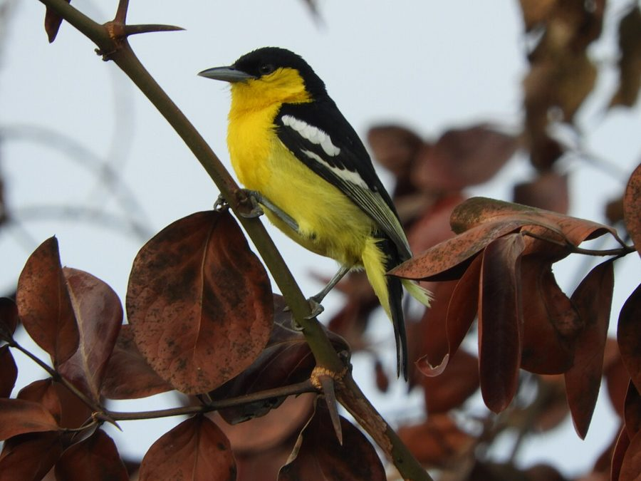

शौबीगाCommon Iora
Aegithina tiphia · Aegithinidae · BRD-0199

- Scientific name वैज्ञानिक नाम
- Aegithina tiphia (Linnaeus, 1758)
- Family कुल
- Aegithinidae
- Hindi हिंदी
- शौबीगा
- Local names स्थानीय नाम
- shaubiga, saubiga, common iora, iora
- Status here यहाँ की स्थिति
- native
- Movement आवागमन
- Resident, here all year
- Known from कहाँ दर्ज
- Others have published records from the Basti–Ayodhya districts बस्ती–अयोध्या के ज़िलों से दूसरों के प्रकाशित अभिलेख
- IUCN IUCN
- LC
- Review समीक्षा
- audited and independently read
When to look कब देखें
Present all year. साल भर मौजूद।
Uses and possibilities उपयोग और संभावनाएँ
Drawn from the documented uses in the profile below, where each is labelled traditional, current or a research lead. All uses →
Tell it apart from इनसे अलग पहचानें
शौबीगा / Common Iora
Aegithina tiphia (Linnaeus, 1758) — Aegithinidae
शौबीगा — यह छोटी, हरी और पीली चिड़िया पूरे साल पूर्वी उत्तर प्रदेश के पेड़ों और झाड़ियों में दिखती है। नर का सिर और पीठ काली होती है, जबकि मादा पूरी तरह हरी होती है। यह चिड़िया अपने तेज़ सीटों के लिए जानी जाती है और पत्तियों पर कीड़े खोजती है।
Quick Identification त्वरित पहचान
| Feature | Description |
|---|---|
| Size | Small sunbird-like; 13–14 cm long |
| Male plumage | Black head, back and wings; yellow rump; yellow underparts |
| Female plumage | Entirely green-yellow; no black markings |
| Behaviour | Active, restless; gleaning insects from foliage; sometimes hangs upside-down |
| Habitat | Trees and bushes; fond of flowering trees |
Field tip: A small, active bird that forages in trees and bushes. Males are strikingly black and yellow; females are entirely green-yellow. Active gleaner; often hangs upside-down while foraging. Characteristic sharp, whistled calls make it easily detected.
हिंदी — कैसे पहचानें:
छोटी, तेज़ पक्षी।
नर का सिर काला, पीठ काली।
मादा पूरी तरह हरी।
पत्तियों पर कीड़े खोजती है।
Morphology आकारिकी
Biometrics:
| Measurement | Range |
|---|---|
| Total length | 130–140 mm |
| Wing (flattened chord) | 72–80 mm |
| Tail | 50–60 mm |
| Bill | 11–13 mm |
| Tarsus | 16–18 mm |
Size: 13–14 cm long; weighs 7–10 g. Tiny, compact bird.
Plumage (male): Head, back, wings and tail glossy black. Rump, thighs and underparts bright yellow. Wings show some yellow markings. Striking black-and-yellow plumage.
Plumage (female): Entirely olive-green above; yellow-green underparts. Duller than male but still colourful.
Bill: Short, thin, pointed; adapted for picking insects from foliage.
Eyes: Small; dark.
Legs and feet: Long; slender; adapted for gleaning on branches.
Sexes: Highly dimorphic. Males strikingly coloured; females much duller and greener.
Juveniles: Resemble females; duller coloration.
Vocalisations. Call repertoire:
- Song: A series of loud, clear whistles; often a rapid series of notes.
- Contact calls: Soft, whistled notes.
- Alarm: Sharp, scolding calls.
हिंदी: तीक्ष्ण सीटें बजाता है। दिन भर गाता रहता है।
Behaviour & Ecology व्यवहार और पारिस्थितिकी
Foraging: Actively gleans insects from leaves and branches. Often hangs upside-down or in acrobatic positions. Feeds on:
- Small insects and spiders
- Insect eggs
- Very small caterpillars
- Occasionally flower parts and nectar
Social behaviour: Solitary or in pairs during breeding; sometimes in small loose flocks during non-breeding season.
Territorial: Males are territorial during breeding season; sing frequently.
Movement: Highly active and restless; moves rapidly through trees.
Feeding method: Picks insects from foliage; gleaning specialist.
हिंदी: अकेले या जोड़ों में रहते हैं। हमेशा चलते-फिरते रहते हैं।
Life Cycle / Phenology जीवन चक्र
Breeding season: April–July in eastern UP; peak May–June.
Nest: Suspended, hanging cup-nest suspended from branches. Built of plant fibre, down and spider web; very delicate.
Clutch: 2–3 eggs; pale greenish with markings.
Incubation and fledging: Both parents incubate and feed young. Incubation 14 days; fledging 12–14 days.
Multiple broods: May raise 2 broods per season.
Moult: Complete post-breeding moult; June–September.
हिंदी: गर्मी में घोंसला बनाता है। पेड़ों की टहनियों पर झूलता है।
Host Plants or Prey आहार
| Food Type | Examples | Feeding Behaviour |
|---|---|---|
| Small insects | Flies, aphids, scale insects, tiny moths | Glean from foliage; pick from leaves |
| Spiders and eggs | Small spider species | Pick from vegetation |
| Caterpillars | Small larvae | Glean from plants |
हिंदी: छोटी कीड़ियाँ खाते हैं। पत्तियों से कीड़े चुनते हैं।
Predators / Natural Enemies शत्रु
- Avian predators: Shrikes, small raptors, crows
- Mammalian predators: Snakes, cats
- Nest predators: Snakes, corvids
- Parasites: Avian parasites, mites
हिंदी: चील और बड़ी चिड़ियाँ इसका शिकार कर सकती हैं।
Agricultural / Human Relevance कृषि प्रासंगिकता
Protected status: Wildlife Protection Act 1972, Schedule IV.
Agricultural value: Feeds on crop pests and insects; beneficial in orchards and gardens.
Cultural relevance: Associated with flowering trees; known to villagers and gardeners.
Ecological role: Pest control; indicator of healthy tree cover.
हिंदी: कीटों को नियंत्रित करते हैं। विधि अधिनियम 1972 के अंतर्गत संरक्षित है।
Expected Locally स्थानीय रूप से अपेक्षित
Not a field record. Written from published accounts for eastern Uttar Pradesh. No confirmed local sighting yet — if you have seen it, that is what the atlas needs.
अभी तक स्थानीय पुष्टि नहीं। यह विवरण प्रकाशित स्रोतों से है, किसी अवलोकन से नहीं।
This species is NOT a field record. The distribution below is based on published sources describing where Common Iora should be looked for in the Basti–Ayodhya region.
Year-round presence: GBIF holds published records from the wider Awadh–Purvanchal plain. Expected resident in eastern UP in gardens, parks, and wooded areas with good tree cover year-round. Most vocal during breeding season (May–June).
Where to look: Deciduous trees and bushes; parks and gardens with mature trees; cultivation margins with scattered trees. Listen for loud, clear whistled calls.
Seasonality: Year-round; may show local movements in response to flowering times of trees.
Detection: Easily located by voice. Watch for characteristic gleaning behaviour on trees.
What a first record would be: A dated photograph showing male's distinctive black-and-yellow plumage (or female's green coloration), with location GPS coordinates and date, submitted through the About page of this atlas.
हिंदी: पेड़ों में साल भर दिखता है। आवाज़ से आसानी से पहचाना जा सकता है।
Distribution वितरण
Global range: Indian subcontinent and Southeast Asia; resident.
In India: Widespread in wooded areas from foothills to peninsula.
In Uttar Pradesh: Common resident in northern and central regions.
In Basti district / eastern UP: Expected in areas with good tree cover and suitable habitat.
Research Questions शोध प्रश्न
- What is the diet composition variation across seasons in eastern UP populations?
- How do flowering patterns of trees affect Iora breeding timing and success?
- What is the territorial behavior and home range size of breeding pairs?
- पूर्वी उत्तर प्रदेश में इसका आवाज़ क्षेत्र-दर-क्षेत्र अलग है या समान है?
- How do males and females partition foraging niches and microhabitats? (Equipment-free: observe and document male and female foraging sites and techniques.)
- What is the impact of pesticide use on Iora populations in agricultural areas?
Similar Species मिलती-जुलती प्रजातियाँ
| Species | Key Difference | Hindi | Field Rule |
|---|---|---|---|
| Golden-fronted Leafbird (Chloropsis aurifrons) | Larger; more green with yellow markings; different behaviour | सुनहरी-माथा | Leafbird is larger and less contrasting. Iora is smaller with males showing bold black and yellow. |
| Sunbirds (various) | If co-occurring: longer, more curved bill; different voice | सूर्यचिड़िया | Sunbirds have more curved bills and different behaviour. Iora has straight bill and gleaning technique. |
Field rule: A tiny, highly active gleaning bird. Males are strikingly black and yellow; females are green-yellow. Characteristic sharp, whistled calls. Often hangs upside-down while foraging in foliage.
Taxonomy & Classification वर्गीकरण
Original description. Described by Linnaeus in 1758. Motacilla tiphia Linnaeus, 1758. Type locality: Java.
Subspecies. Multiple subspecies recognised; the Indian populations are A. t. tiphia (Linnaeus, 1758).
Family and order placement. Order Passeriformes; family Aegithinidae (ioras). Genus Aegithina comprises small, brightly coloured Asian birds.
Phylogenetic notes. Aegithina is a monotypic genus with this and one other species. Recently given its own family status (Aegithinidae).
IUCN status rationale. Assessed as Least Concern (LC) globally. Population is stable. Adaptable to human-modified habitats with trees. Protected under the Wildlife Protection Act 1972.
हिंदी: भारत में साधारण है। कानून से सुरक्षित है।
Photo Gallery फोटो गैलरी
No photos yet — add field photos to media/species/common_iora/ and run node scripts/sync_photos.js.
Wanted photos:
- Male showing black and yellow plumage
- Female for comparison (green colouration)
- Gleaning behaviour on foliage
- Hanging upside-down on branch
- Suspended nest (if found)
- Pair during breeding season
References संदर्भ
- Linnaeus, C. (1758). Systema Naturae per Regna Tria Naturae (10th edn). Laurentii Salvii, Holmiae. Vol. 1, p. 184.
- Ali, S. & Ripley, S. D. (1972). Handbook of the Birds of India and Pakistan. Vol. 5 (Waxwings to Whydahs). Oxford University Press, Delhi. Pp. 298–300.
- Grimmett, R., Inskipp, C. & Inskipp, T. (2011). Birds of the Indian Subcontinent (2nd edn). Oxford University Press, Delhi. P. 328.
- Praveen, J., Jayapal, R. & Pittie, A. (2016). A checklist of the birds of India. Indian Birds 11 (5–6): 113–172.
- GBIF Occurrence Data — Aegithina tiphia, India.
- IUCN Red List (2023). Aegithina tiphia — BirdLife International assessment. IUCN, Cambridge. Status: Least Concern.
Source file: species/fauna/birds/common_iora.md